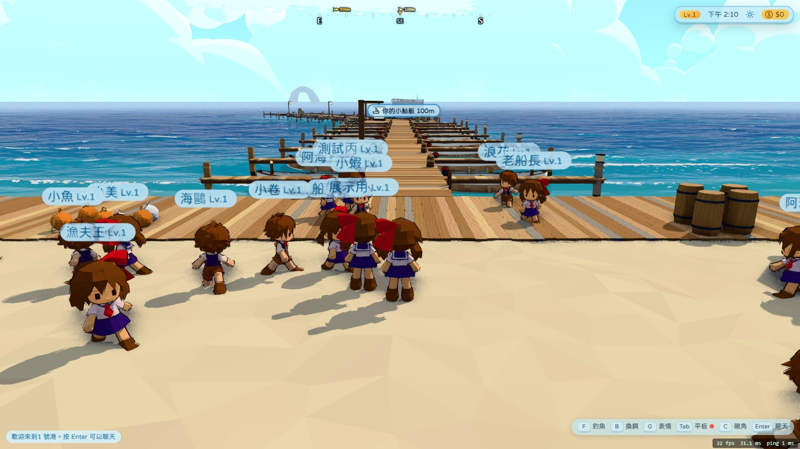
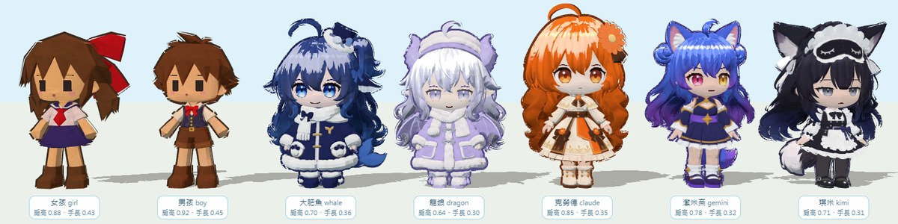
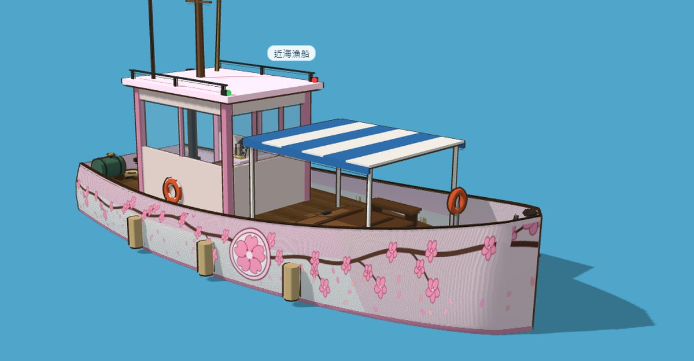
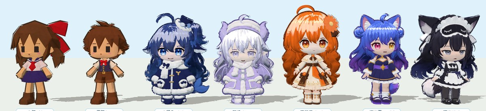
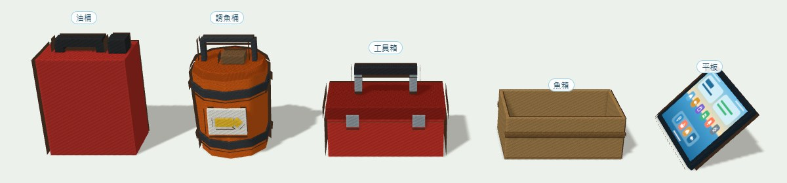

以 3D 線上釣魚遊戲 Stormcast 為例
朝陽科大 資通系 吳翊銘
好幾個 AI 一起寫程式，遇到的就是這個問題。


只會產生文字
自己讀檔、改程式、跑起來看結果
Stormcast 就是好幾個 AI Agent 輪流改同一個資料夾寫出來的。
AI 看不到彼此的對話，只共用同一個資料夾。開工前都先讀這三種檔：
能做什麼、不能做什麼
程式現在長怎樣
誰做了什麼、做到哪
一個任務一篇。下一個 AI 開工前讀最近幾篇，就知道別人在做什麼。
④⑤ 改到對為止；⑦ 挑出的錯回到 ④
② 做多大、⑦ 修哪些、⑧ 要不要上線

/boats.html
/models.html
/props.html顏色塗歪、比例怪，讀程式看不出來；排在一起，一眼就看到。
按下上線的永遠是人：它會影響正在玩的玩家。
改了一段程式，一進遊戲只剩深藍底。
→ 改完要真的打開來玩
加了安全規則，正式網站壞掉，自己電腦卻正常。
→ 上線後去正式網站看
畫面變深藍，AI 先猜錯原因，修錯又改回來。
→ 找到真正原因再修
| 錯 | 以前誰發現 | 現在在哪一步就查 |
|---|---|---|
| 遊戲打不開 | 使用者 | ⑤ 改完就打開來玩 |
| 正式網站壞掉 | 玩家 | ⑧ 上線後馬上看 |
| 手冊跟程式對不上 | 下一個 AI | ⑥ 提交前跑 docLint |
docLint：自動拿手冊寫的名字去程式裡找，找不到就是手冊過時了。
AI 會失憶，記憶寫成檔案
讀、改、測、交、審、上線
錯在哪一步，就在那一步查
每張右下角都標了它用的 Wiki 頁。Wiki 由 14 份 Stormcast 專案的真實資料整理而成。